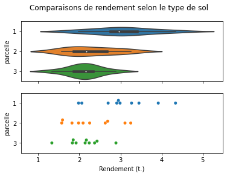
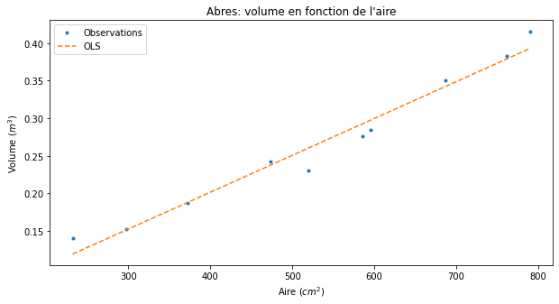
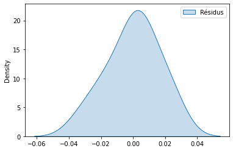

mon_fichier = 'tp_note3_hlma408_gr_C_joseph_salmon.ipynb'alpha = len(mon_fichier) / 1000
alpha0.041from scipy.stats import norm
norm.ppf(1 - alpha)1.7391976652852517import numpy as np
n_samples = 1000def echantillon_de4df(n_samples):
return np.ceil(np.random.rand(n_samples) * 4)from scipy.stats import chi2, chisquareimport pandas as pd
df_des = pd.DataFrame({"tirage": echantillon_de4df(n_samples)})
eff_empirique = df_des.value_counts(echantillon_de4df(n_samples))
print(eff_empirique)4.0 275
1.0 253
2.0 247
3.0 225
dtype: int64eff_theorique = np.ones(4) * 0.25 * n_sampleschi2_stat, chi2_pvalue = chisquare(eff_empirique, f_exp=eff_theorique, ddof=0, axis=0)chi2_stat, chi2_pvalue(5.072, 0.1666002350747284)chi2_pvalue> 0.05TrueConclusion: on valide l’hypothèse car la p-value est tres grande.
Exercice 3
from download import download
url = 'http://josephsalmon.eu/enseignement/datasets/prairie.txt'
download(url,'./prairie.txt', )Replace is False and data exists, so doing nothing. Use replace=True to re-download the data.'./prairie.txt'df_prairie = pd.read_csv('prairie.txt', sep="\s+")import seaborn as sns
import matplotlib.pylab as plt
fig, ax = plt.subplots(nrows=2, sharex=True)
sns.violinplot(x="rendement", y="parcelle", data=df_prairie, ax=ax[0], orient='h')
sns.swarmplot(x="rendement", y="parcelle",data=df_prairie, ax=ax[1], orient='h')
fig.suptitle("Comparaisons de rendement selon le type de sol")
ax[1].set_xlabel('Rendement (t.)')
ax[0].set_xlabel('')
fig.savefig("swarm_violin.pdf")
plt.show()
echA = np.array([14.4, 14.7, 13.2, 12.1, 18.7, 15.0, 13.3, 17.8, 16.6, 15.0])
echB = np.array([25.6, 17.7, 19.0, 26.7, 22.6, 19.1, 22.9, 21.0, 25.7, 23.7])diff_mean = (echA.mean() - echB.mean())
print(diff_mean, echA.mean(), echB.mean())-7.319999999999997 15.080000000000002 22.4sigA = np.std(echA, ddof=1)
sigB = np.std(echB, ddof=1)
nA = len(echA)
nB = len(echB)sig_tot = np.sqrt(sigA**2 / len(echA) + sigB**2 /len(echB) )from scipy.stats import t, ttest_indIC_min = diff_mean + sig_tot * t.ppf(1-alpha / 2, df=np.min([nA-1, nB-1]))
IC_max = diff_mean - sig_tot * t.ppf(1-alpha / 2, df=np.min([nA-1, nB-1]))
print(IC_min, IC_max)-4.487487058486943 -10.15251294151305H_0 : "\mu_A = \mu_B" (esperance)\\ H_1 : "\mu_A \neq \mu_B" (esperance)
ttest_ind(echA, echB, equal_var=True)Ttest_indResult(statistic=-6.159312323000714, pvalue=8.145901431650428e-06)ttest_ind(echA, echB, equal_var=False)Ttest_indResult(statistic=-6.159312323000714, pvalue=1.5082683565150463e-05)Donc au niveau
alpha0.041on rejette H_0
from download import download
url='http://josephsalmon.eu/enseignement/datasets/Hospit.csv'
download(url,'./Hospit.txt', )Replace is False and data exists, so doing nothing. Use replace=True to re-download the data.'./Hospit.txt'df_hospit = pd.read_csv('Hospit.txt', sep=";")df_hospit| ID | Mois_hospit | Maladie | |
|---|---|---|---|
| 0 | 1 | Janvier | A |
| 1 | 2 | Janvier | A |
| 2 | 3 | Juillet | B |
| 3 | 4 | Novembre | A |
| 4 | 5 | Mars | A |
| ... | ... | ... | ... |
| 146 | 147 | Janvier | A |
| 147 | 148 | Juillet | A |
| 148 | 149 | Avril | A |
| 149 | 150 | Fevrier | A |
| 150 | 151 | Aout | A |
151 rows × 3 columns
df_maladieA = df_hospit[df_hospit['Maladie']== 'A']df_months = df_maladieA["Mois_hospit"].value_counts()df_monthsJanvier 18
Fevrier 16
Decembre 13
Novembre 12
Octobre 10
Avril 10
Aout 9
Septembre 9
Mars 8
Mai 6
Juin 5
Juillet 4
Name: Mois_hospit, dtype: int64df_months.sum()120chi2_stat, chi2_pvalue = chisquare(df_months, ddof=0, axis=0)print(chi2_stat, chi2_pvalue)19.6 0.051137607840198974chi2_pvalue > alphaTrueDonc si c’est True, on a une grande pvalue, donc on accepte H_0 : tous les mois identiques… mais on est bordeline quand meme…
from download import download
url = 'http://josephsalmon.eu/enseignement/datasets/arbres.txt'
download(url,'./arbres.txt')Replace is False and data exists, so doing nothing. Use replace=True to re-download the data.'./arbres.txt'df_arbres = pd.read_csv('arbres.txt', "\s+")
df_arbres| vol | aire | |
|---|---|---|
| 0 | 0.152 | 297 |
| 1 | 0.284 | 595 |
| 2 | 0.187 | 372 |
| 3 | 0.350 | 687 |
| 4 | 0.416 | 790 |
| 5 | 0.230 | 520 |
| 6 | 0.242 | 473 |
| 7 | 0.276 | 585 |
| 8 | 0.383 | 762 |
| 9 | 0.140 | 232 |
df_arbres.sort_values('aire', inplace=True)import statsmodels.api as sm
df_arbres| vol | aire | |
|---|---|---|
| 9 | 0.140 | 232 |
| 0 | 0.152 | 297 |
| 2 | 0.187 | 372 |
| 6 | 0.242 | 473 |
| 5 | 0.230 | 520 |
| 7 | 0.276 | 585 |
| 1 | 0.284 | 595 |
| 3 | 0.350 | 687 |
| 8 | 0.383 | 762 |
| 4 | 0.416 | 790 |
df_arbres = sm.add_constant(df_arbres)
model = sm.OLS(df_arbres['vol'], df_arbres[['const', 'aire']])
results = model.fit()
print(results.summary()) OLS Regression Results
==============================================================================
Dep. Variable: vol R-squared: 0.970
Model: OLS Adj. R-squared: 0.966
Method: Least Squares F-statistic: 257.2
Date: Tue, 04 May 2021 Prob (F-statistic): 2.29e-07
Time: 09:24:00 Log-Likelihood: 27.418
No. Observations: 10 AIC: -50.84
Df Residuals: 8 BIC: -50.23
Df Model: 1
Covariance Type: nonrobust
==============================================================================
coef std err t P>|t| [0.025 0.975]
------------------------------------------------------------------------------
const 0.0052 0.017 0.305 0.768 -0.034 0.045
aire 0.0005 3.06e-05 16.039 0.000 0.000 0.001
==============================================================================
Omnibus: 0.402 Durbin-Watson: 1.105
Prob(Omnibus): 0.818 Jarque-Bera (JB): 0.331
Skew: -0.343 Prob(JB): 0.847
Kurtosis: 2.431 Cond. No. 1.75e+03
==============================================================================
Notes:
[1] Standard Errors assume that the covariance matrix of the errors is correctly specified.
[2] The condition number is large, 1.75e+03. This might indicate that there are
strong multicollinearity or other numerical problems./home/jsalmon/anaconda3/lib/python3.8/site-packages/scipy/stats/stats.py:1603: UserWarning: kurtosistest only valid for n>=20 ... continuing anyway, n=10
warnings.warn("kurtosistest only valid for n>=20 ... continuing "print('Parameters: ', results.params)
print('R2: ', results.rsquared)Parameters: const 0.005233
aire 0.000491
dtype: float64
R2: 0.9698390398668416fig, ax = plt.subplots(figsize=(10,5))
plt.plot(df_arbres['aire'], df_arbres['vol'], '.', label="Observations")
plt.title("Abres: volume en fonction de l'aire")
plt.xlabel(u'Aire ($cm^2$)')
plt.ylabel(u'Volume ($m^3$)')
plt.plot(df_arbres['aire'],
results.predict(df_arbres[['const', 'aire']]),'--',
label="OLS")
plt.legend()
print('R2 / Proportion de vairance expliquée ', results.rsquared)R2 / Proportion de vairance expliquée 0.9698390398668416plt.figure()
sns.kdeplot((results.resid -results.resid.mean()/results.resid.std()),
label="Résidus", shade=True)
plt.legend()
X_to_predict = pd.DataFrame({'const': [1.], 'aire': [500]})
X_to_predict| const | aire | |
|---|---|---|
| 0 | 1.0 | 500 |
predictions = results.get_prediction(X_to_predict)
df_predictions = predictions.summary_frame(alpha=alpha)
IC_down_etire = df_predictions['mean_ci_lower'].astype(float)
IC_up_etire = df_predictions['mean_ci_upper'].astype(float)predictions.summary_frame(alpha=alpha)| mean | mean_se | mean_ci_lower | mean_ci_upper | obs_ci_lower | obs_ci_upper | |
|---|---|---|---|---|---|---|
| 0 | 0.250638 | 0.005597 | 0.23702 | 0.264256 | 0.206077 | 0.295198 |
IC_down_concentre = df_predictions['mean_ci_lower'].astype(float)
IC_up_concentre = df_predictions['mean_ci_upper'].astype(float)print('\n', IC_down_concentre,'\n', IC_up_concentre)
0 0.23702
Name: mean_ci_lower, dtype: float64
0 0.264256
Name: mean_ci_upper, dtype: float64%matplotlib inline
fig, ax = plt.subplots(figsize=(10, 5))
plt.plot(df_arbres['aire'], df_arbres['vol'], '.', label="Observations")
plt.title("Abres: volume en fonction de l'aire")
plt.xlabel(u'Aire ($cm^2$)')
plt.ylabel(u'Volume ($m^3$)')
plt.plot(df_arbres['aire'],
results.predict(df_arbres[['const', 'aire']]),'--',
label="OLS", color='k')
plt.legend()
pred_465 = predictions.summary_frame(alpha=alpha)['mean'].iloc[0]
plt.plot(X_to_predict.iloc[0]['aire'], pred_465, '.', label="Observations", ms=10, color='k')
ax.vlines(X_to_predict.iloc[0]['aire'], IC_down_concentre, IC_up_concentre, color='k')
ax.hlines(IC_up_concentre, X_to_predict.iloc[0]['aire'] - 10, X_to_predict.iloc[0]['aire'] + 10, color='k')
ax.hlines(IC_down_concentre, X_to_predict.iloc[0]['aire'] - 10, X_to_predict.iloc[0]['aire'] + 10, color='k')
plt.show()